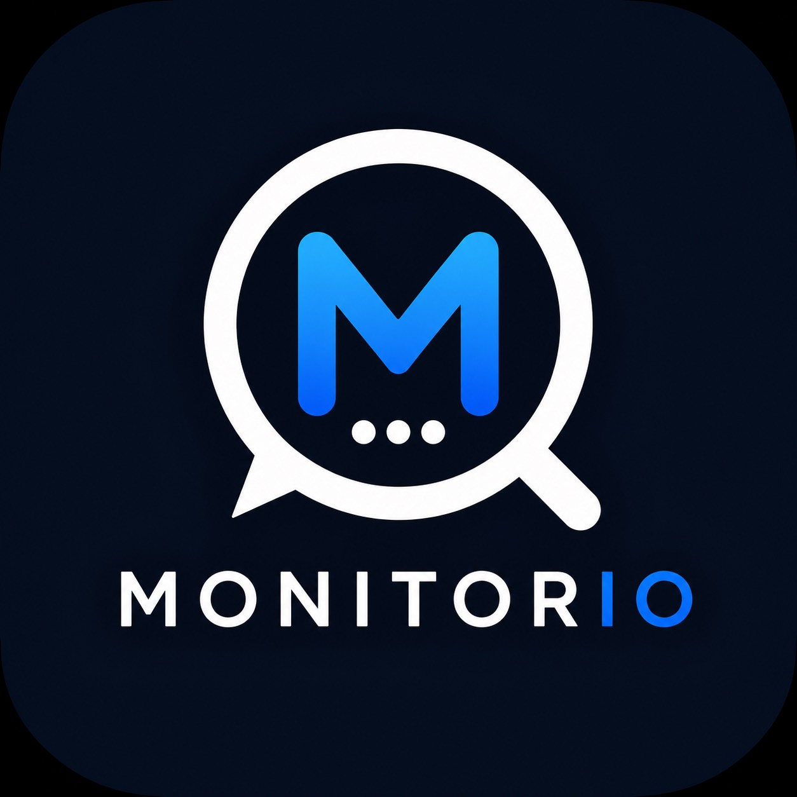

Monitorio = контроль інформаційного поля без ручного шуму
Бренд має передавати відчуття точного радара: він знаходить згадки, структурує сигнали й допомагає швидко реагувати на важливе.
Monitorio виглядає як швидкий, точний і технологічний інструмент: темна основа, чистий білий знак, яскравий синій акцент і мінімум зайвого шуму.

Коротко про те, як бренд має сприйматись.
Бренд має передавати відчуття точного радара: він знаходить згадки, структурує сигнали й допомагає швидко реагувати на важливе.
Діловий, швидкий, спокійний, технологічний, зрозумілий.
Команди, що відстежують новини, бренди, персоналії, теми, регіони, Telegram-канали та відкриті джерела.
Короткі фрази, конкретна користь, без складних термінів. У центрі не технологія, а результат: знайдено, перевірено, збережено.
Моніторинг, згадки, джерела, регіони, Telegram, RSS, повний текст, звіти, AI-дайджест.
Знак поєднує лупу, діалогове вікно, літеру M і три крапки як символ постійного пошуку сигналів.
Щоб знак залишався читабельним у Telegram, на сайті й у листах.
Палітра побудована навколо темного інформаційного поля і яскравого синього сигналу.
| Token | Hex | Де використовувати |
|---|---|---|
--brand-bg | #020814 | темний фон, hero, логотип, dark UI |
--brand-surface | #061426 | кабінет, картки, меню, панелі |
--brand-blue | #129CFF | акценти, активні пункти, посилання |
--brand-action | #0875FF | primary CTA, активні кнопки |
--brand-text | #FFFFFF / #061426 | білий на темному, navy на світлому |
--brand-muted | #71829B | другорядний текст, пояснення, підписи |
Шрифт має бути сучасним, спокійним і добре читатись у Telegram Mini App.
Inter або Manrope для всіх інтерфейсів, листів і сайту. Обидва варіанти мають чисту геометрію й добре працюють з цифрами, датами та таблицями.
Fallback: "Segoe UI", Arial, sans-serif.
12 / 14 / 16 / 18 / 22 / 28 / 40 / 64. Для кабінету базовий текст 16 px, для лендінгу hero 56-82 px.
Для лімітів, дат і статистики використовуйте tabular figures: 819, 59/1000, 5 min.
Monitorio має виглядати як робочий інструмент, а не рекламний банер.
Використовуйте щільну, але не перевантажену структуру: верхні метрики, 4-5 основних вкладок, картки з чіткими діями, помітні активні стани.
Радіус карток 14-22 px, кнопок 12 px. Межі тонкі, синій тільки для активної дії або важливого сигналу.
Контраст тексту не нижче WCAG AA, мінімальний touch target 44 px, не покладатись тільки на колір: додавати текстові підказки.
Ці версії вже лежать у папці брендбуку.
monitorio-avatar-1024.pngmonitorio-avatar-512.pngmonitorio-avatar-256.pngmonitorio-logo-full.pngКороткі правила для типових носіїв.
Використовувати `monitorio-avatar-512.png`. Не ставити wordmark, бо він не читається у маленькому розмірі.
Перший екран: назва Monitorio, коротка користь, 1300+ джерел, RSS + TG, звіти й AI-дайджест.
Світлий фон, темний заголовок, синя CTA-кнопка. Логотип краще ставити у темному квадраті зверху.
Верхній колонтитул: Monitorio, період звіту, країна, кількість згадок. Акценти тільки синім.
Аватар-символ, короткі пости з одним головним меседжем, без перевантаження скріншотами інтерфейсу.
“Знайдіть важливі згадки раніше.”
“Моніторинг новин і Telegram в одному кабінеті.”
“Сигнали з медіа без інформаційного шуму.”